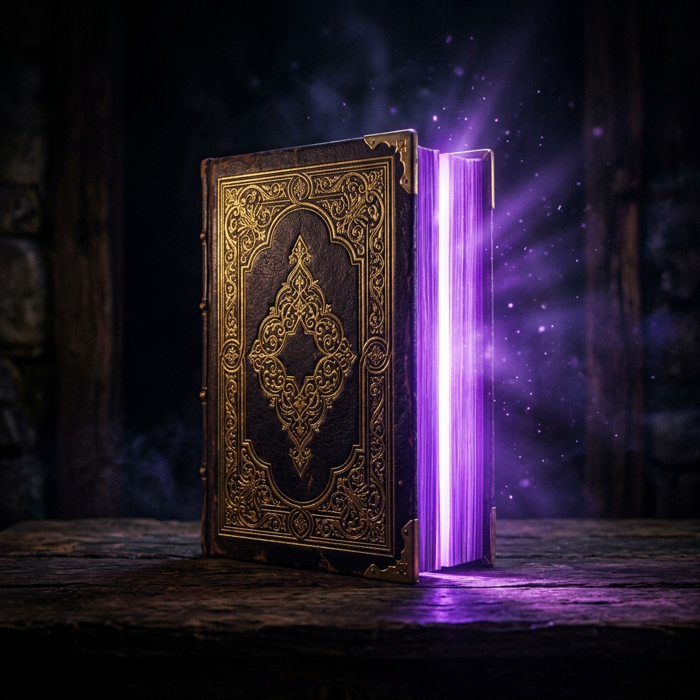
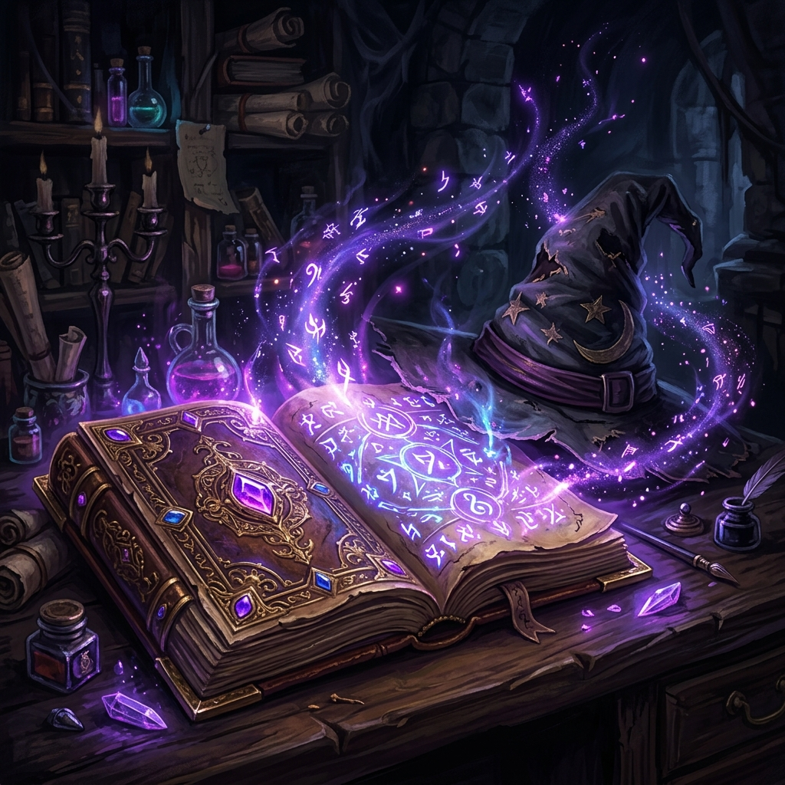

Har bir kitob — yangi hayot. Sahifalar orasida yo'qolib, g'oyalar olamini kashf et. Bilim eng kuchli qurol!

Kitob o'qish faqat bilim bermasdan, hayotingizni tubdan o'zgartiradi
Kitob o'qish miyani faol ushlab turadi. Har bir so'z, gap va g'oya miyangizni yangi yo'nalishlarda ishlatishga majbur qiladi.
95% samaraliFaqat 6 daqiqa kitob o'qish stress darajasini 68%ga kamaytiradi. Kitob — eng yaxshi terapevt!
88% samaraKo'p o'qigan odam ko'p so'zni biladi. Boyitilgan lug'at sizni har qanday vaziyatda muloqot qila olishingizga yordam beradi.
92% samaraKitob o'qish paytida faqat bir narsaga e'tibor qaratish diqqatni rivojlantiradi va konsentratsiyani yaxshilaydi.
85% samaraKitob orqali dunyoning har bir burchagiga sayohat qilishingiz mumkin. Xayol olamida chegara yo'q!
100% bepulKitob o'qish ijodiy fikrlashni kuchaytiradi. Yangi g'oyalar va noyob yechimlar paydo bo'ladi.
90% samaraO'zingizga mos kitob janrini toping va sayohatingizni boshlang

Sehrli olamlar, ajdaholar va qahramonlik sarguzashtlari
Koinot sirlari, fizika qonunlari va kashfiyotlar dunyosi
Hayot ma'nosi, axloq va insoning o'rni haqida chuqur fikrlar
O'tmishdan saboq oling va sivilizatsiyalar sirlari bilan tanishing
Muvaffaqiyat siri, odatlar va inson psixologiyasi
Muhabbat, hayot va insoniy hissiyotlarning go'zal tasviri
Dunyoning eng mashhur kitoblaridan ajoyib parchalarni tinglang
Professional o'quvchilarning eng yaxshi usullari
"Kitob o'qigan odam ming yil umr ko'radi"— Sharq donishmandligi
Har kuni kamida 20-30 daqiqa kitob o'qing. Ertalab yoki kechqurun — muhimi muntazamlik.
Ovoz shovqinsiz, yoqimli va qulay joy o'qishni yanada zavqli qiladi.
Muhim fikrlarni yozib boring. Bu bilimni mustahkamlaydi va eslab qolishga yordam beradi.
O'qiyotganda telefon va boshqa chalg'ituvchilarni chetga qo'ying. Diqqatingiz to'liq kitobda bo'lsin.
O'qigan kitobingizni muhokama qilish tushunishni chuqurlashtiradi va yangi nuqtai nazarlar ochadi.
Kitoblar haqidagi qiziqarli savollar bilan bilimingizni tekshiring
Kitob o'qish haqidagi eng keng tarqalgan savollarga javoblar